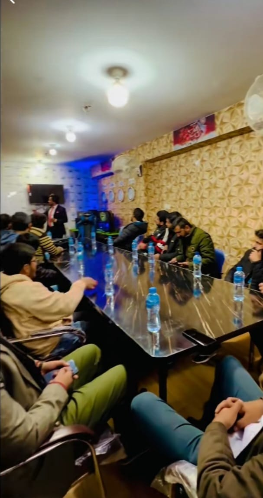

📊 Personalized Trading Mentorship
📈 YouTube Channel: Trading Mentorship & Insights
to my channel dedicated to trading education and mentorship. With [5] years of experience in the financial markets, I offer practical insights and strategies tailored for traders at all levels.🎥Comprehensive Market Analysis:
Dive deep into market trends and analysis to make informed trading decisions.Gain access to in-depth market analysis and insights. I cover a wide range of topics including technical analysis, fundamental analysis, market trends, and trading strategies. Stay informed and make informed decisions.
🔔 Live Trading Sessions:
Participate in live trading sessions where I share my screen, analyze real-time market conditions, and discuss potential trading opportunities. These sessions also include Q&A segments where you can ask questions and receive immediate feedback.
🎓 Mentorship Programs:
Receive one-on-one coaching sessions customized to your specific needs and trading goals. Whether you're a beginner or an experienced trader, I provide personalized guidance to help you develop your trading strategy, manage risk effectively, and optimize your trading performance.
📚 Educational Content:
Access a library of educational videos covering a variety of trading topics, from basic concepts to advanced strategies. Learn at your own pace and build a solid foundation of knowledge to navigate the markets confidently.
📈 Trading Community Engagement:
Join a supportive trading community where members share insights, discuss trading ideas, and network with like-minded individuals. Engage in meaningful discussions and stay connected with the latest updates in the trading world.
📹 Featured Videos:
Introduction to Technical Analysis 📊:
Learn key technical indicators and how to apply them in your trading.
Risk Management Strategies 🛡️:
Discover effective ways to manage risk and protect your capital.
Resource Recommendations 🔗:
Explore recommended tools, books, and resources to further enhance your trading skills and knowledge. 📚 Stay updated with the latest technologies and trends shaping the trading landscape.
Conclusion
📧 Interested in collaboration opportunities or have specific questions? Feel free to reach out via [email/website/social media] for partnerships, speaking engagements, or personalized inquiries. Subscribe to my channel for valuable updates, actionable trading insights, and step-by-step guidance to help you achieve your trading goals. 🚀 Let's embark on this trading journey together!